收录于合集

作品简介
【作者】 赖洪毅，英国诺丁汉大学政治与国际关系学院副教授。曾任新加坡国立大学当代中国研究学院副教授，新加坡国立大学东亚研究所高级研究员，主要研究领域为中国的治理，以及中国国内和国际政治经济之间的联系。
【编译】 聂涵琳（国政学人编译员 中国人民大学国际政治经济学）
【校对】 刘瑛琛
【审核】 肖龙
【排版】 石寒冰
【美编】 臧泽华
【来源】 Hongyi Lai (2021) The Rationale and Effects of China’s Belt and Road Initiative: Reducing Vulnerabilities in Domestic Political Economy, Journal of Contemporary China, 30:128, 330-347, DOI: 10.1080/10670564.2020.1790896
【归档】 《国际关系前沿》2021年第3期，总第30期
期刊简介
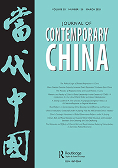
《当代中国》（Journal of Contemporary China）是北美一份为学者、商业及政府决策者提供当代中国信息的重要期刊，以双月刊形式发行。研究领域包括经济、政治、法律、文化、文学、商业、历史、国际关系及其他社会科学与人文科学，被多家重要索引机构收录。
**中国“一带一路”倡议的提出缘由和效果评估：降低国内政治经济的脆弱性
**
The Rationale and Effects of China’s Belt and Road Initiative: Reducing Vulnerabilities in Domestic Political Economy
赖洪毅
内容提要
现有文献表明，中国提出“一带一路”倡议是为了通过基础设施投资促进中国经济增长，加强与欧亚大陆的经济、基础设施和政治联系，以及对抗美国的“重返亚洲”战略。本文立足于中国国内政治经济，认为“一带一路”倡议旨在降低以下三个可能破坏中国经济增长并威胁其政治体制的脆弱性:工业产能过剩、通过海上而不是更安全的陆路方式运输的大量能源进口，以及西部地区欠开发。解决这些脆弱性有助于维持中国的经济模式。最后作者对这些目标的实现情况进行初步评估与总结研究成果。
文章导读
01
引言
2013年提出了“一带一路”倡议(the belt and road initiative ，缩写为BRI)。该项目旨在沿着两条经济带建设两个国家集群，即沿着古丝绸之路连接中国西部与中亚、中东、东南欧和西欧的陆基经济走廊，以及连接中国东南沿海与东南亚、南亚、海湾国家、东非和欧洲的海上经济带。随后几年，“一带一路”倡议被纳入中国的重大政治会议或最重要的政治文件，大量的人力物力被投入进来。本文认为，中国主要外交政策不能简单地被视为一种对近期外部刺激的回应(如美国提出TPP),或仅仅是对当前国内经济问题(如中国经济增长放缓)的补救。相反，中国的外交政策需要从一个更深层次的背景来解释，即它在降低政治经济的主要脆弱性和维持中国经济体制进而维护政治体制方面所扮演的角色。
02
文献综述
本文主要关注推动“一带一路”倡议提出的动力。
现有文献认为主要有三类经济方面的原因。其一，一些政治学家和政治经济学家认为中国通过“一带一路”倡议，寻求在欧亚大陆的外部安全与更大的国际经济影响力，并试图通过建立亚洲基础设施投资银行(AIIB)来塑造全球经济秩序。其二是保持经济增长，推动中国产业升级和经济开放。其三是刺激中国西部的增长，并将一些过剩产能转移到东南亚。然而，上述研究尚未就“一带一路”倡议在缓解产能过剩、保障能源进口增长和减少区域不平等方面的作用提供详细、实证和基于丰富数据的分析，也没有对“一带一路”倡议缓解这些问题效果进行评估。
现有理论文献也大多未能就促使“一带一路”倡议提出的国内外政治经济联系提供令人信服的观点。作为最著名的新现实主义者，米尔斯海默（Mearsheimer）认为“一带一路”倡议不会有效培育中国在东北亚的霸权，因为其涵盖的主要地区是中亚、南亚、中东、东南亚以及南欧和东欧，且日本和台湾等东北亚经济体尚未参与。自由主义者对于“一带一路”倡议的外部性方面也没有统一的看法。基欧汉（Keohane）和奈（Nye）的分析没有考虑国内因素，约翰•伊肯伯里（John lkenberry）和达伦·林姆（Darren J. Lim）在亚投行中看到了制度性的治国方略和多边主义的元素，认为其是中国为“一带一路”倡议提供资金的工具。与本文最相关的是罗纳德•罗戈夫斯基（Ronald Rogowski）提出的由要素禀赋（factor- endowment）导致的贸易和国内联盟模型。他认为当贸易扩张时，劳动密集型部门（这也是中国要素禀赋占优的部门）的政治力量会占上风，促使商品出口增加，而不是将由国有企业主导的资本密集型基础设施项目推广至海外。作者认为需要一个有效的分析视角来阐述“一带一路”倡议是如何被构想出，以及它是如何为中国的政治经济体制服务的。
03
本文的目标与主张
本文主要采用定性方法，作者不仅将概述降低经济脆弱性的官方意图，还将研究有助于阐明“一带一路”倡议在缓解脆弱性方面影响的数据，在实证基础上分析其原因和影响。谢淑丽（Susan Shirk）认为中国利用争取到的代表沿海省份和轻工业精英联盟的支持，稳步推进财政与国有企业改革。将她的见解应用到本文的三个脆弱性中，作者认为在推出“一带一路”倡议时迎合了以下五方面部门、省甚至部级的利益，包括1)一些被产能过剩威胁到生存的国有企业主导行业(主要是采掘业和重工业)；2)因为地域原因而亟需深化开放的西部十二省；3)一系列忽视了这些行业的强大的国家部委和局(如财政部、人力资源和社会保障部、商务部、人民银行、国有资产监督管理委员会、税务、交通、铁路、能源)；4)监督西部省份的国家部委；5)将从“一带一路”倡议中获益的强大国家集群，特别是交通、铁路和能源。作者认为这些部门的利益以及西部省份与沿海地区的追赶关系到中国经济体制的福祉，而经济体制是执政党的基石，中国希望维持经济增长以防下行趋势，借此维护作为有能力者的信誉，并维持执政党的合法性。
04
中国提出“一带一路”倡议的缘由
（一）为过剩产能寻找新市场
近20年来，中国工业特别是重工业产能严重过剩。相较于美国等大型发达经济体，投资与净出口在中国经济增长中发挥的作用更大。由于中国经济增长相对更为依赖投资与净出口而较少依赖消费，中国的产能过剩加剧。同时，那些承担着过剩产能的产业又多为国有产业所主导，为释放产能而关停国有企业的可能性较小。与经济增长严重依赖投资有关，中国的工业产能利用率（industrial capacity utilization，下文简称ICU）远低于主要发达经济体，甚至是巴西等新兴经济体（如表1所示）。
表1 世界主要经济体的平均工业产能利用率一览（%）
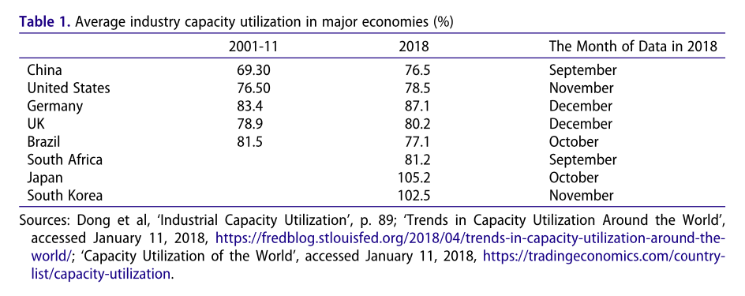
从图1可以看出，受全球金融危机影响，中国的平均工业产能利用率在2007年达到峰值后的两年开始下降，2010-2011年推出财政刺激方案后曾短暂反弹，但2012年的再次下降向政策制定者发出了阻止其进一步下滑的信号。在区域方面，西部地区产能过剩最为严重，平均工业产能利用率仅为46.8%，落后于东北地区（54.8%）、中部地区（57.7%）和沿海地区（81.3%）。
产能过剩导致了一系列经济问题，如2013年10月国务院发布的《国务院关于化解产能严重过剩矛盾的指导意见》所言，“部门财政损失不断增加，企业员工失业，银行不良资产积累，生态环境退化，直接危及部门健康发展，甚至危及民生改善和社会整体稳定”。
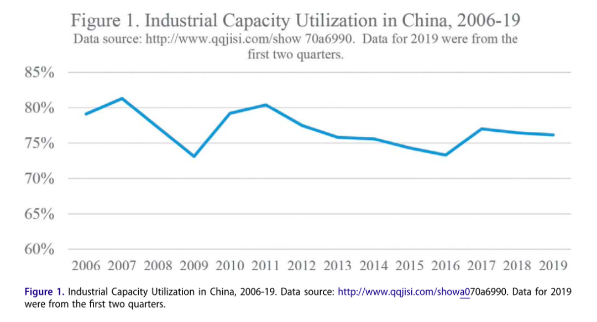
图1 中国2006-2019年的工业产能利用率
对此，中国敏锐地意识到需要解决工业产能过剩问题。表2列出了国务院在2006-2013年间政策文件所指出的产能过剩的产业部门或产品，重工业部门一直是政府削减过剩产能行动的重点。除此之外，寻找新的外部市场也是措施之一。中国可以利用其过剩的工业产能（特别是在基础设施建设和运输设备方面）生产所需产品来填补整个亚洲的基础设施赤字。
表2 国务院在2006-2013年间政策文件指出的
产能过剩的产业部门
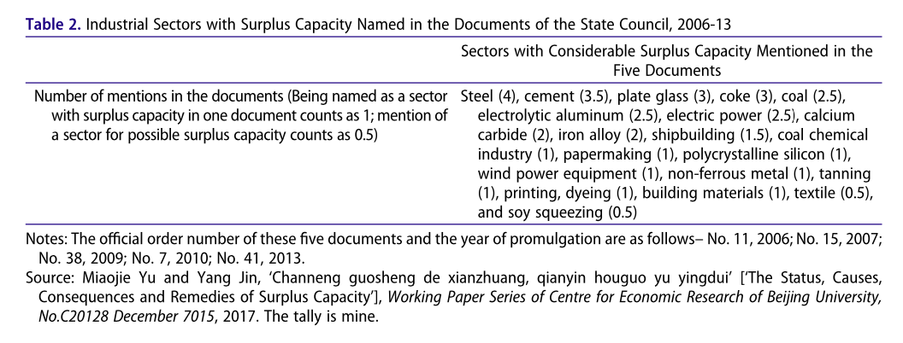
2011年麦肯锡的一份报告指出，未来十年亚洲需在能源、交通、电信、水和卫生设施等基础设施方面投资800亿美元才能克服投资不足的问题。国务院2006-2013年出台的去产能政策文件中最常提及的产品与上述报告中提到的能源、交通和电信基础设施项目密切相关，这并非巧合。
经验证据同时表明，沿线国家在“一带一路”倡议实施的第一年就成为中国钢铁产品的重要出口市场。现有的工业绩效数据则表明，“一带一路”倡议在缓解产能过剩、减轻负债资产比率和库存资产比率等方面发挥了作用（详见表3）。
表3 2006-2019年工业产能利用率、负债资产比率和
库存资产比率
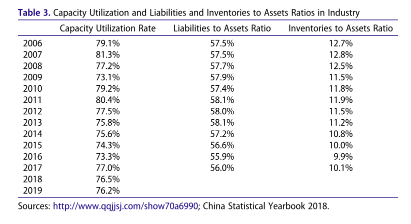
研究“一带一路”倡议启动前后受过剩产能影响最大的工业部门经济表现，我们可以发现除了部分非金属矿物制品(non-metallic mineral products，包括水泥、平板玻璃、多晶硅和建筑材料)在2013年和2014年产能有所提高之外，图2和图3中其他部门的产能利用率在2013-2016年度连续出现不同程度的下降。
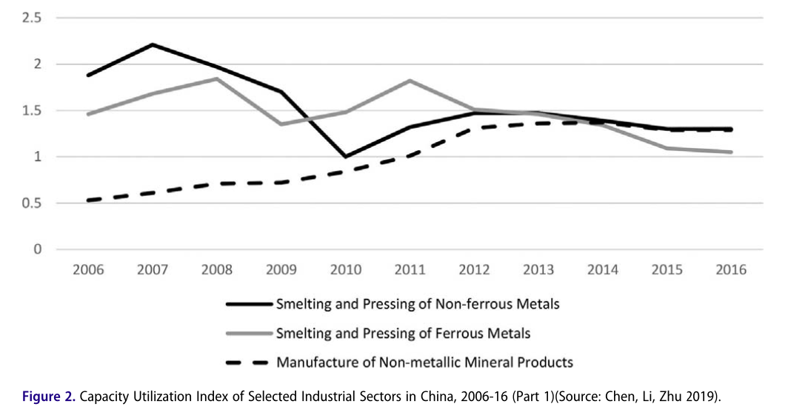
图2 2006-2019年中国选定的工业部门产能利用指数（第一部分）
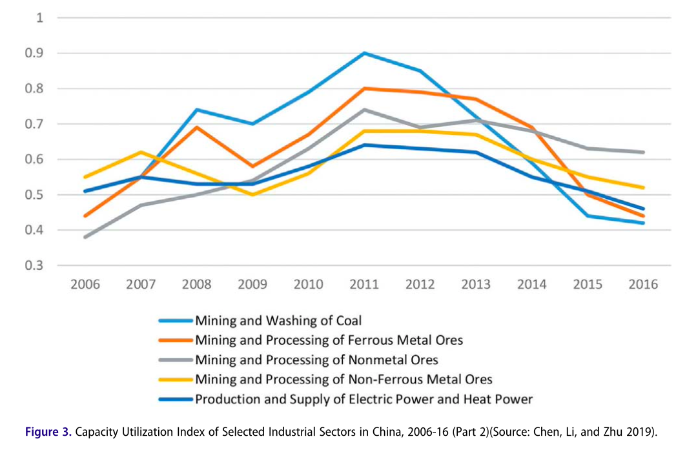
图3 2006-2019年中国选定的工业部门产能利用指数（第二部分）
（二）保障能源进口的路线安全
“一带一路”倡议还将有助于中国巩固其在印度洋、马六甲海峡和南海战略海上通道的安全；另一方面陆上新丝绸之路的建设将有助于确保中国通过大陆桥进口能源的安全。
由于中国经济的迅猛发展，自2009年以来，中国连续九年成为世界上对石油和其他液体燃料需求增长最快的国家。中国进口石油的主要供应地区是中东与非洲，这两个地区分别承担了中国石油进口总量的44%与19.7%，最大的天然气供应国则是土库曼斯坦(占中国天然气管道进口量的51.4%)。
中国从中东和非洲进口的石油必须通过横跨印度洋的海上运输通道、马六甲海峡和南海运输(下文简称这一航道为IO-SM-SCS SLOC)，天然气进口对这一航道的依赖要少得多。为满足中国国内消费，绝大多数原油和石油需要进口，而进口必须通过IO-SM-SCS SLOC运x输，这一事实加剧了中国战略规划者的担忧。任何外部力量破坏这条海上战略通道的行为都可能危及中国能源进口的稳定。因此早在2004年，中国就开始正视对IO- SM-SCS SLOC的严重依赖，近几十年来提出了以下四种能源进口替代途径。
1)中亚-中国油气管道(陆上1号线)，包括一条输油管道和一条输气管道；
2)东西伯利亚-中国油气管道(陆上2号线)，长4770公里，年输油能力1500万吨，设计年产能为380亿立方米；
- 缅中油气管道(陆上3号线)，输油管道的设计年产能为2200万吨，输气管道的设计年产能为120亿立方米；
4）中巴经济走廊(CPEC)，计划以铁路、石油和天然气管道连接南疆和巴基斯坦印度洋上的深水港口瓜达尔港(陆上4号线)。
首先，“一带一路”倡议进一步加强了中国与前三条基本建成的陆上线路沿线国家的能源和基础设施联系。其次，中国可以进一步同巴基斯坦、中亚、缅甸等国进行能源项目合作。第三，通过“一带一路”倡议这个平台，中巴最终可能建成中巴经济走廊和陆上4号线，提供海上通道以外的替代路线。此外，中国希望与能源进口海上线路关键的沿线国家建立更加紧密的经济联系。
最后，作者关于“一带一路”倡议对石油进口影响的初步评估如下。2012到2018年，沙特阿拉伯在中国原油进口中的份额从近20%下降到略高于12%。得益于陆上2号线，俄罗斯在中国原油进口中的份额从9%扩大到15%以上，超越沙特阿拉伯成为2016—2018年间中国最大的原油供应国（图4）。但作者认为，中俄达成能源伙伴关系不仅是因为两国在能源上互补，也是地缘政治和意识形态的需要。
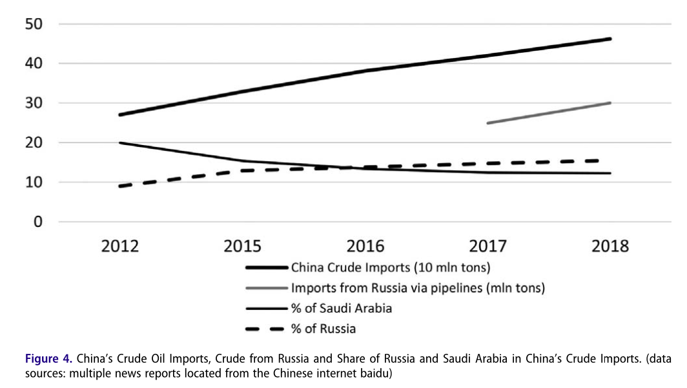
图4 中国的原油进口，来自俄罗斯的原油以及
俄罗斯和沙特阿拉伯在中国原油进口中的份额
（三）提升西部经济地位
中国还打算通过“一带一路”倡议扩大贸易联系，加快西部地区增长势头，从而降低区域发展不平等的程度。
几十年来沿海地区一直是中国显著增长的主要引擎，严重的区域发展不平等引起了西部地区的不快。作为回应，1999年启动的西部大开发计划(WRDP)旨在改善基础设施，发展西部地区具有比较优势的部门（如资源和能源）。在14年的努力后西部大开发计划取得了一些显著成就（详见表4）。
表4 中国四大区域经济发展水平(省级平均水平)
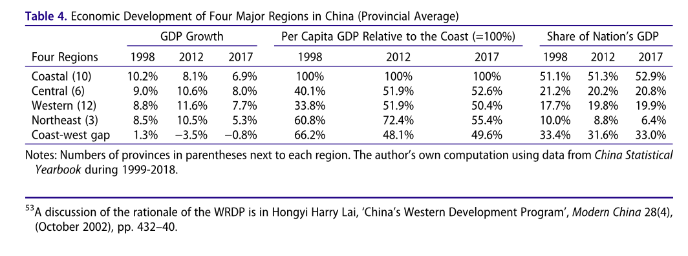
然而，如表5所示，在1998到2012年间，西部地区在中国对外贸易中所占份额从4.2%上升到5.6%，而外国资本在其资本结构中的份额却从8.9%下降到5.8%，这表明中国需要刺激外国资本流入西部。“一带一路”倡议的提出有利于推动新一轮经济开放和双向投资，为西部地区扩展出口市场，带来繁荣。
作者通过西部地区的经济表现对“一带一路”倡议的影响进行了初步评估。“一带一路”倡议显然成功扩大了西部地区对外贸易和投资联系，如表5所示，西部地区占中国对外贸易比重从2012年的5.6%上升到2017年的6.8%，外资占西部地区资本结构中的份额翻倍。而且2017年西部12省年均经济增速为7.7%，高于沿海地区，在国内生产总值中所占比重五年间从19.8%微幅增长到19.9%。但2017年西部地区人均国内生产总值为沿海六省平均水平的50.4%，低于2012年的51.9%(表4)。作者认为这可能是更多人决定在蓬勃发展的西部地区生活和工作，人口增加所致。总的来说，“一带一路”倡议加强了西部省份与沿线国家之间的基础设施和经济联系，从而推动了西部地区经济增长，保持了其在国民经济中的份额。
表5 中国四大区域对外贸易和外国投资情况
(省级平均水平)
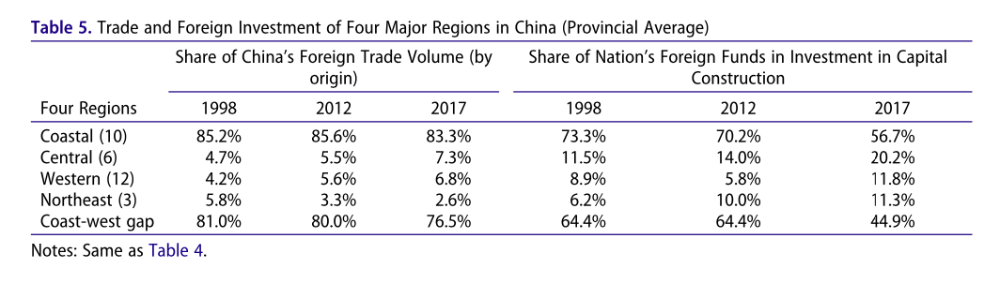
05
结语
本文强调了“一带一路”倡议的内外联系，将“一带一路”倡议视为有助于缓解中国经济脆弱性、维持增长，进而确保政治经济体制生存的中国方案。“一带一路”倡议将允许中国将过剩的产能转移到其他国家，从而维持中国的经济增长，避免大规模破产与失业，并安抚国有企业。此外，“一带一路”倡议将加强中国与欧亚大陆的联系，推动西部省份经济发展，并减轻过度依赖沿海地区的风险。最后，在西部建设陆上能源进口通道一方面可以扩大能源进口，另一方面也能保证进口通道安全。同时本文还运用经验证据和数据对上述三个政治经济目标的实现情况作出初步评价。
简而言之，本文探讨了“一带一路”倡议等重大方案在降低经济脆弱性、服务于经济体制和国内政治利益方面的作用。这种分析方法可以帮助我们更加全面地地理解国际政治经济中的重大战略，而非仅仅侧重于关注这种战略的国际原因。
译者综述
以2013年金秋为起点，“一带一路”倡议作为承载时代使命的世纪工程，彰显了我国正在国际经济舞台扮演更加积极的角色，然而，“一带一路”倡议的提出与推广并非坦途，“国内参与各方的组织协调与利益共享、沿线国家发展水平与接受能力、信誉风险与项目落地的历史业绩、区域大国的合作意愿与‘明争暗斗’以及西方国家的掣肘和影响”[1]，都说明“一带一路”倡议是机遇与挑战并存。今年3月5日，国务院总理李克强在第十三届全国人民代表大会第四次会议上的政府工作报告中四次提到“一带一路”，肯定了“一带一路”建设的成果。[2]
本文聚焦于探讨“一带一路”倡议的动力，致力于弥补学界在有效的分析视角和阶段性评估方面的脆弱性。虽然文中三大脆弱性在现有文献中均各有提及，但本文的看点便在于对每项脆弱性进行了基于实证和详实数据的分析，并没有泛泛而谈整个行业或区域形势，而是立足脆弱性产生的背景、现状和提出“一带一路”倡议的动因与考量，结合近些年的宏观数据与行业形势，做出较为客观的初步评估，具有一定的现实意义。本文可以说打开了国家与国内政治的“黑箱”，从国内政治经济学角度探究国家内部的决策动机、特点以及决策的落地情况，进而分析以国家为基本单元情境下国内政治经济结构的变化对国际政治经济体系的影响。
但本文也存在一定的逻辑疏漏，作者认为“一带一路”倡议有助于缓解中国政治经济中的脆弱性，进而维护体制的运行，这无疑将合法性和信誉来源基本归结为经济增长为民众带来的福利，而现有文献表明至少有五种对政权合法性水平高低的理论解释，经济福利只是其中之一，除此之外还有内在效能感、外在效能感与文化价值观等。[3]“合法性是一个‘因时因地’的哲学”，[4]信誉的提高与合法性的稳固来源并不仅仅是经济水平的提高，还有对执政能力、表现的肯定等适用于中国语境的因素。在对走向海外的合作过程中也有类似的逻辑问题，单单以经济因素对政治的影响来判定或预判国际合作与否和程度深浅有失偏颇，例如2020年中国就在没有完全满足国内需求的情况下为“一带一路”沿线国家提供了大量的疫苗，体现了中国的国际主义精神，[5]还有“让中国疫苗成为全球公共产品”的承诺，[6]这背后的成本与考量并不是经济数据所能一概而论的。
总的来说，“一带一路”倡议是我国构建全方位对外开放新格局的重大战略举措，作为发起国，“一带一路”倡议推广与实施的效果好坏极大程度上取决于我国的综合国力，降低国内政治经济的脆弱性不仅是提出“一带一路”倡议的动力之一，也能够起到推动其更好发展的双向互动。[7]尽管推进“一带一路”倡议充满变数，但发展好国内经济、治理好国内事务无疑是中国更好地走出去，实行“一带一路”倡议的基础和关键。
参考文献
[1]盛斌,黎峰.“一带一路”倡议的国际政治经济分析[J].南开学报(哲学社会科学版),2016(01):52-64.
[2] [5]丁一凡.2021.丁一凡：2021年“一带一路”建设将保持上升势头. https://www.yidaiyilu.gov.cn/ghsl/gnzjgd/166765.htm.访问时间：2021年3月14日。
[3] 唐文方.政权合法性比较研究：以中国大陆和台湾为例[J].国外理论动态,2013,(7).66-81.
[4]杨光斌.合法性概念的滥用与重述[J].政治学研究.2016,(2).2-19.
[6]https://www.yidaiyilu.gov.cn/rzgymcwqqggcp/tj/163660.htm.访问时间：2021年3月15日。
[7]邹帅,宋子豪,章鹏霞.“一带一路”:机遇与挑战并存[J].合作经济与科技,2015(23):5-7.
词汇整理
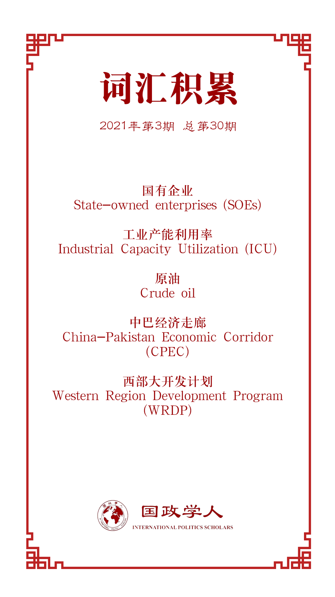
文章观点不代表本平台观点，本平台评译分享的文章均出于专业学习之用, 不以任何盈利为目的，内容主要呈现对原文的介绍，原文内容请通过各高校购买的数据库自行下载。
好好学习，天天“在看”